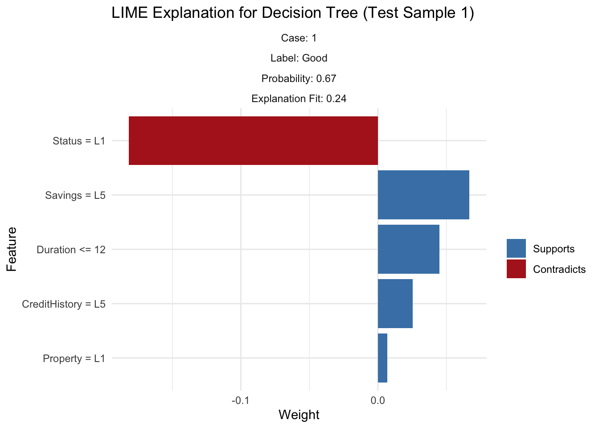
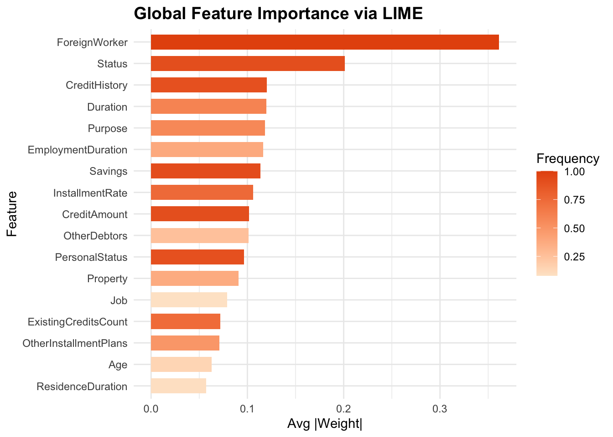

Initialize a DALEX explainer for the trained logistic regression model by converting the binary target into 0/1 and linking the predictor data—so that we can later compute SHAP‐style explanations.
Permutation-based variable importance was used to assess which predictors most influence our logistic regression credit‐risk model by measuring the drop in AUC when each feature is shuffled; when plotted, “Status” clearly causes the largest loss (around 0.85 → 0.75), followed by “CreditHistory,” “Purpose,” and “Duration,” whereas features like “Telephone,” “Dependents,” and “Housing” sit near the top with almost no AUC loss, indicating minimal importance—this ordering highlights that an applicant’s status and credit history are the key drivers of model performance, while peripheral attributes contribute little.
Local SHAP values were computed to understand how each feature in our logistic regression model pushes the prediction for a single test case toward “Bad” (positive contribution) or “Good” (negative contribution) credit risk; for this sample, a high credit history level (“CreditHistory = L5”), strong savings (“Savings = L5”), longer duration, older age, and basic property (“Property = L1”) all increase the likelihood of a “Bad” label, while poor status (“Status = L1”), a moderate number of existing credits (“ExistingCreditsCount = L2”), and a high installment rate (“InstallmentRate = L4”) counteract that by pushing the prediction toward “Good.”
4.2 Configure LIME for Decision Tree
Define the model_type and predict_model methods so that LIME knows how to call our pruned rpart tree and obtain class‐probability outputs.
lime_explainer_tree <-lime(x = train_data[, setdiff(names(train_data), "CreditRisk")],model = pruned_tree,bin_continuous =TRUE)lime_explanation_tree <- lime::explain(x = test_data[1, setdiff(names(test_data), "CreditRisk"), drop =FALSE],explainer = lime_explainer_tree,n_features =5,n_labels =1)plot_features(lime_explanation_tree) +ggtitle("LIME Explanation for Decision Tree (Test Sample 1)") +theme_minimal()

LIME was applied to the pruned decision tree for a single test case to show which features support or contradict its “Good” prediction—here, a low application status (Status = L1) strongly contradicts the Good outcome, while strong savings (Savings = L5), shorter loan duration (Duration ≤ 12), excellent credit history (CreditHistory = L5), and housing status (Housing = L2) all contribute in favor of predicting “Good.”
4.3 Global LIME Analysis for Logistic Regression
Retrain the logistic model (after dropping a column), register it with LIME, and generate explanations across the first 100 test instances to capture global patterns in feature contributions.
4.3.1 Visualize global LIME importance and distributions
Code
global_importance <- lime_explanations %>%group_by(feature) %>%summarise(Avg_Weight =mean(abs(feature_weight)),Frequency =n() /nrow(test_features[1:100, ]),.groups ="drop" ) %>%arrange(desc(Avg_Weight))ggplot(global_importance, aes(x =reorder(feature, Avg_Weight), y = Avg_Weight, fill = Frequency)) +geom_col(width =0.7) +scale_fill_gradient(low ="#FEE6CE", high ="#E6550D") +labs(title ="Global Feature Importance via LIME", x ="Feature", y ="Avg |Weight|") +coord_flip() +theme_minimal() +theme(plot.title =element_text(face ="bold", size =14))

Global LIME importance was calculated by averaging each feature’s absolute local weight across 100 test cases—plotted here as horizontal bars colored by how often each feature appeared—revealing that being a “ForeignWorker,” application “Status,” and “CreditHistory” drive the model most strongly, while factors like “ResidenceDuration” and “Age” contribute least.
The results show that foreign-worker status, application status, and credit history strongly affect credit risk predictions. However, practical factors like loan duration, having no collateral, and existing debts clearly signal higher risk. This means lenders should carefully consider these practical financial details when reviewing loan applications.